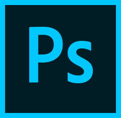

ICS Blog
Overview
During my time as an apprentice at Image Conscious Studios (ICS), one of the projects I worked on was re-designing the current ICS blog landing page. Most of the traffic that led to the ICS website came through the blog, so it was usually the first impression most people got about the design studio. One of the issues with the old landing page was the amount of tag links under the featured post.
My solution to this problem was to create a clean minimal design that fit with the rest of the ICS brand, but made it easier to navigate through different articles depending on its catagory. The user can toggle between all articles by order of date posted, or by category listed in alphabetical order. Since the blog is where most visitors enter the ICS site, I wanted to highlight the studio's recent work to encourage user's to navigate towards the portfolio section.
Current Website

Wireframe
Final Designs


Software
